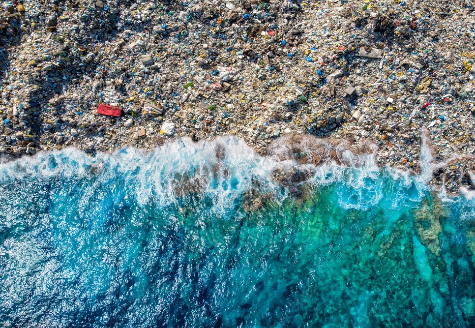
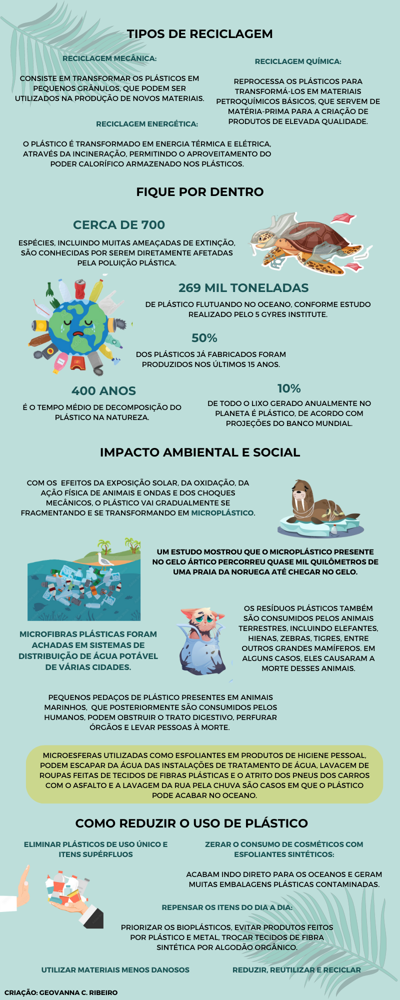

Ao longo das últimas décadas, o plástico entrou com peso em diversos ramos industriais (construção civil, eletrônica, embalagens, móveis, etc.), substituindo metal, vidro, cerâmica, madeira e papel devido a algumas vantagens, como facilidade de transporte e de processamento, o menor consumo de energia e a grande durabilidade. Em termos de embalagens, o plástico é imbatível, pois apresenta boas características com relação à higiene, além de resistência ao ataque de animais e manutenção da qualidade do produto nela contido.
As conveniências e comodidades que os plásticos oferecem, no entanto, levaram à uma cultura do “consumir e descartar” que acabou por revelar uma face oculta e perigosa do seu ciclo de existência. Muitos desses produtos, como sacolas e embalagens de alimentos, têm vida útil de horas, algumas vezes de alguns minutos, mas podem demorar séculos para se decomporem no meio ambiente.
O impacto ambiental do lixo plástico no oceano e, consequentemente, na cadeia alimentar, se tornou uma verdadeira preocupação ambiental para governos, cientistas, ONGs e pessoas comuns do mundo inteiro. Após o descarte - mesmo que este seja feito corretamente -, os plásticos podem escapar para o ambiente e acabam no organismo de animais, nos lençóis freáticos, no solo e na atmosfera. Uma vez no organismo animal, o plástico é nocivo química e fisicamente, causando disfunções hormonais, morte por sufocamento, redução de populações por causa de problemas de reprodução, entre outros danos.
Termoplásticos:
Eles não sofrem alteração em suas estruturas químicas após o aquecimento. Portanto, podem ser fundidos novamente para constituírem um novo material. Esse processo pode ser repetido várias vezes. Correspondem a 80% dos plásticos consumidos. Exemplos são: embalagens de massas e biscoitos, embalagens de detergentes, sacolas de mercado, garrafas PET, potes de iogurte, embalagens de água mineral, entre outros.
Termorrígidos:
São plásticos que não se fundem com o aquecimento, sendo também insolúveis e não recicláveis. Exemplos desse tipo, são: lentes de óculos, utensílios de cozinha e algumas peças plásticas de aparelhos televisores.
